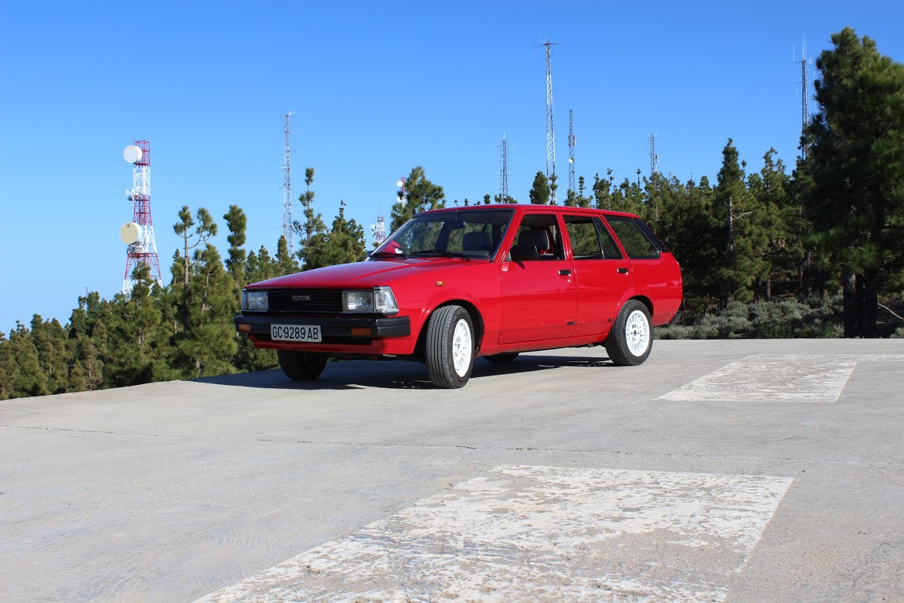
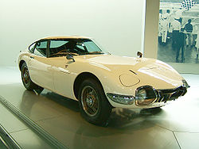
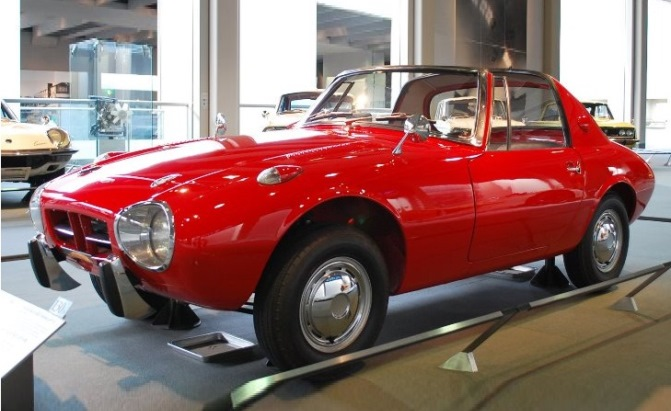
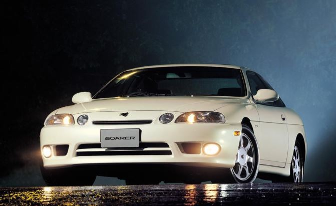
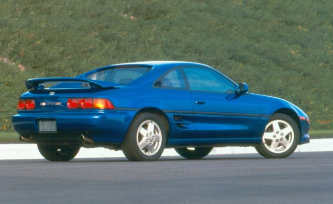

<ion-header>
  <ion-navbar color = 'danger'>
      <button ion-button menuToggle>
          <ion-icon name="menu"></ion-icon>
        </button>
    <ion-title>
      Mythical Models
    </ion-title>
  </ion-navbar>
</ion-header>

<ion-content padding>
    
    <ion-card *ngFor = "let model of models">
      
      <ion-card-content>
        <ion-card-title>
          {{model.name}}
          </ion-card-title>
        <p text-justify>
          {{model.description}}
          <!-- The inspiration for the Toyota GT86, the AE86 versions of the Toyota Sprinter Trueno and Corolla Levin 
          have become legends in the compact tuner world. Used as a basis for everything from drift cars to time attack monsters, 
          the AE86 in stock form came with a 1.6-liter four-cylinder engine that made between 112 and 128 hp depending on region and year.
          Available as a coupe or a hatchback, the lightweight rear-wheel drive-car was the definition of budget motoring fun in the mid-1980s. -->
        </p>
      </ion-card-content>
    </ion-card>
    <!-- <ion-card>
      
      <ion-card-content>
        <ion-card-title>
          Toyota KE70
          </ion-card-title>
        <p text-justify>
          The Corolla E70 was the fourth generation of cars sold by Toyota under the Corolla nameplate.
          The fourth-generation model was released in March 1979 in Japan, 
          and was the last generation to have the entire lineup in rear-wheel-drive 
          configuration. Export sales commenced in August 1979. The one-millionth Corolla 
          was a 70-series, built in February 1983. A limited "One Million Edition" 
          was released in Japan at this time.
        </p>
      </ion-card-content>
    </ion-card>
    <ion-card>
      
      <ion-card-content>
        <ion-card-title>
          Toyota 2000GT
          </ion-card-title>
        <p text-justify>
          Built in low numbers and demanding insanely expensive prices today, the 2000GT showed the world 
          that Toyota could build a seriously good sports car in 1967.
          The 2000 in the name refers to the 2000-cc six-cylinder engine that made 150 hp. 
          Weighing just under 2,500 lbs, the 2000GT wasn’t the fastest car on the road, 
          but it was a joy to drive and sure looked good no matter what speed it was traveling at.
        </p>
      </ion-card-content>
    </ion-card>
    <ion-card>
      
      <ion-card-content>
        <ion-card-title>
          Toyota S800
          </ion-card-title>
        <p text-justify>
          The S800 was Toyota’s first proper sports car. Power for the S800 came from a 
          0.8-liter, two-cylinder horizontally opposed engine. Making a modest 44 hp, 
          the car weighed less than 1,300 pounds. It was a two-seat targa that featured 
          a lift-out roof panel.
          Good looking and fun to drive, the S800 would start a long legacy of sporty Toyotas.
        </p>
      </ion-card-content>
    </ion-card>
    <ion-card>
      
      <ion-card-content>
        <ion-card-title>
          Toyota Celica
          </ion-card-title>
        <p text-justify>
          The Celica is a nameplate that was around for a long time. 
          Available at times with rear-wheel drive or front-wheel drive, 
          it’s the all-wheel-drive models that were something special. 
          Called the GT-Four, in 1986, the first all-wheel-drive turbocharged 
          Celica came to be powered by 190 hp 2.0-liter four-cylinder engine. 
          The next year it would come to North America as the Turbo All-Trac.
          The GT-Four would continue for two more generations of Celica, with 
          the final Japanese versions making 251 hp in the late 1990s.
        </p>
      </ion-card-content>
    </ion-card>
    <ion-card>
      
      <ion-card-content>
        <ion-card-title>
          Toyota Soarer Turbo
          </ion-card-title>
        <p text-justify>
          Although there were four generations of Soarers, 
          it was the turbocharged versions that set new standards in performance 
          and luxury. In 1988, two turbocharged engines were offered in the Soarer, 
          but it was the inclusion of the 1JZ 2.5-liter turbocharged six-cylinder 
          engine in 1991 that really made this car a rocket. Best of all, it could 
          be had with a manual transmission.
        </p>
      </ion-card-content>
    </ion-card>
    <ion-card>
      
      <ion-card-content>
        <ion-card-title>
          Toyota MR2
          </ion-card-title>
        <p text-justify>
          A mid-engine, two-seat sports car is always intriguing, but the 
          MR2 took things to another level because it wasn’t some high-priced exotic, 
          but rather a car that was attainable for the average consumer. 
          Initially available with naturally aspirated four-cylinder engines and 
          one with a supercharger bolted on, when the second-generation MR2 came along, 
          things got serious. In North America, the MR2 could be had with a 2.0-liter 
          turbocharged engine that produced 200 hp. In Japan, that same powerplant 
          could make as much as 241 hp out of the factory.
        </p>
      </ion-card-content>
    </ion-card>
    <ion-card>
      
      <ion-card-content>
        <ion-card-title>
          Toyota GT86
          </ion-card-title>
        <p text-justify>
          Introduced in 2012, the Toyota GT86 goes by many names around the world 
          including Scion FR-S and Subaru BRZ. Built as a back-to-basic sports car, 
          the lightweight GT86 is a rear-wheel-drive two-door vehicle with an emphasis 
          on driving fun. Power comes for a 2.0-liter four-cylinder engine making 200 hp.
        </p>
      </ion-card-content>
    </ion-card> -->
</ion-content>
